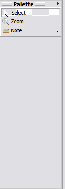

Unlike the Class Diagram Editor where you have multiple tools available, you only have the following tool options available with the Instance Diagram Editor. For more information about the Class Diagram Editor, refer to Using the Class Diagram Editor.

The Drawing Palette automatically displays on the right hand side of the Instance Diagram Editor. The following drawing options are available:
- Select items in your instance diagram using the Select tool ( ).
- Zoom in closer to view specific areas of your instance diagram using the Zoom tool ( ).
- Zoom out to view your entire instance diagram by pressing SHIFT + the Zoom tool.
- Attach notes and text to your instance diagram by using the Note tool ( ) and the corresponding pull-down menu appears from which you can select from the following available options: Note, Text, Note Attachment. For more information about the Note tool and the Text tool, refer to Attaching Notes and Text in the Class Diagram Editor section.